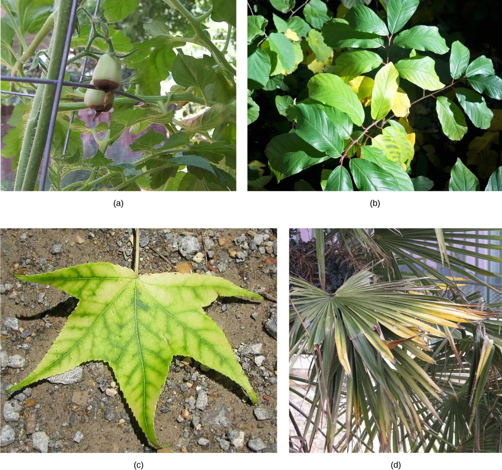
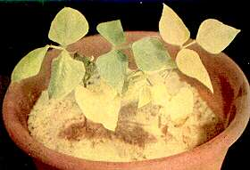
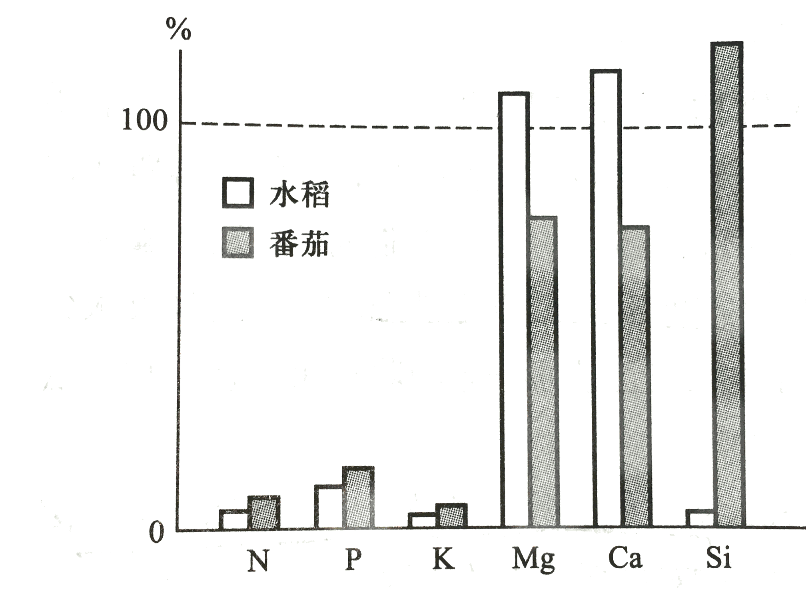
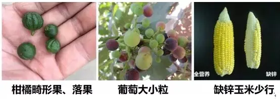

植物对矿质元素的吸收、运输和同化统称为矿质营养。植物由水分和干物质组成，干物质经600℃充分燃烧后剩下的灰分（占干重5%～10%）即为矿质元素。氮素不属于矿质元素，但因吸收方式与矿质元素相同，一并讨论。
研究必需矿质元素的方法：溶液培养法（水培）和砂基培养法（砂培）。鉴定标准（三条）：不可缺少性、不可替代性、直接功能性。
目前公认所有植物的必需元素共17种。
大量元素（9种，占干重0.01%以上）：C、H、O、N、K、Ca、Mg、P、S。其中C、H、O占干重96%。
微量元素（8种，占干重0.01%以下）：Fe、Mn、B、Zn、Cu、Mo、Cl、Ni。注意：Fe是微量元素！
有益元素与必需元素的区分：Si 和 Na 对大多数高等植物而言是有益元素而非必需元素。Si 能增强禾本科植物（如水稻）细胞壁的机械强度和抗病性；Na 可在一定程度上替代 K⁺ 的渗透调节功能，但仅少数 C₄ 植物（如蓝藻、甜菜）对其有微量必需性。Co 是根瘤菌固氮酶辅因子的组成成分，对豆科植物共生固氮间接必需，但并非植物自身必需元素。
| 元素 | 主要作用 | 缺素症 |
|---|---|---|
| N | 叶绿素、氨基酸、激素和辅酶等组成 | 植株矮小枝少，叶小色淡或发红 |
| K | 离子平衡、膜电位、多种酶辅因子、促进糖运输、气孔开闭 | 老叶叶尖叶缘先黄化，严重时焦枯坏死；茎秆柔弱易倒伏 |
| Ca | 膜透性调节、胞间层果胶盐成分、细胞壁产生、第二信使 | 叶尖干枯，嫩叶芽尖根尖坏死 |
| Mg | 叶绿素成分；糖代谢、核酸合成等多种酶辅因子 | 叶脉仍绿而叶脉间缺绿（典型！） |
| P | 核酸、磷脂、ATP和辅酶等成分 | 叶小而暗，叶上出现红色 |
| S | 胱氨酸、甲硫氨酸及某些维生素成分 | 似缺N，但从嫩叶开始 |
| Fe | 细胞色素、过氧化物酶等血红素成分，叶绿素合成必需 | 幼叶叶脉间缺绿，甚至全叶白化 |
| Mn | 多种酶（细胞呼吸、TCA循环、水光解、氮代谢）辅因子 | 叶脉间缺绿，有坏死小斑 |
| Zn | 色氨酸（生长素前体）合成；多种脱氢酶活化剂 | 叶小且形变、缺绿，茎节间短 |
| B | 糖过膜转运、花粉萌发和花粉管延长 | 嫩芽顶芽坏死，"花而不实" |
| Cu | 催化氧化反应酶成分、质体蓝素成分 | 叶黑绿有坏死点，从嫩叶叶尖开始 |
| Mo | 硝酸还原酶成分、固氮酶钼铁蛋白成分 | 老叶叶脉间缺绿甚至坏死 |

缺素症发生部位规律：可循环利用的元素（N、P、K、Mg、S）缺乏时，病症首先出现在老叶；不可循环利用的元素（Ca、Fe、Mn等）缺乏时，病症首先出现在幼叶。
根毛区是根尖吸收离子的主要部位（虽然分生区累积离子多，但无输导组织；根毛区已分化完全，离子被及时转移）。
离子进入根的途径：质外体途径（经内皮层以外的质外体→皮层或内皮层质膜→共质体→中柱）和共质体途径（经表皮细胞质膜→共质体→中柱）。
离子进入自由空间（三个阶段）：
离子进入共质体：
主动运输的电化学基础：质膜 H⁺-ATPase 水解 ATP 将 H⁺ 泵出细胞，形成胞外正电、胞内负电的膜电位（通常 −60～−200 mV），同时建立胞外低 pH、胞内高 pH 的质子梯度。阳离子（如 K⁺）可经电压门控通道或 H⁺/K⁺ 反向转运体进入细胞；阴离子（如 NO₃⁻、Cl⁻）多经 H⁺/阴离子同向转运体利用质子动力势进入细胞。这是矿质离子跨膜吸收的主要机制。
杜南平衡（Donnan equilibrium）：细胞内含有不能扩散到胞外的大分子化合物（如带负电的蛋白质R⁻），称为不扩散离子。当细胞置于KCl溶液中时，Cl⁻顺浓度梯度扩散入胞，K⁺也入胞以保持电中性。平衡时：[K⁺]外×[Cl⁻]外=[K⁺]内×[Cl⁻]内。这是一种特殊的被动吸收（协助扩散），可使细胞内某离子浓度高出胞外几十倍，不需要消耗能量。
离子释放到导管：由木薄壁细胞通过主动运输（另一种离子泵）或协助扩散释放到导管中。
1. 对矿质元素和水分的相对独立的吸收：两者既有联系又相对独立。水分吸收可通过蒸腾流促进矿质运输，但盐分吸收以主动运输为主，需消耗代谢能，与水分吸收的机制不同。
2. 离子的选择吸收：不同植物对离子的选择吸收不同（如番茄吸收Ca、Mg多而Si少，水稻吸收Si多而Ca、Mg少）。
生理酸性盐、生理碱性盐和生理中性盐：
3. 单盐毒害和离子拮抗：
根系吸收的矿质元素主要通过木质部导管向上运输，运输速率为30～100cm/h。叶片等地上部分也可吸收矿质元素（根外营养/叶面施肥），进入叶片后通过韧皮部运输。
矿质元素的分布与利用：
土壤中的氮素主要以 NO₃⁻（硝态氮）和 NH₄⁺（铵态氮）形式被植物吸收。硝酸盐必须经还原后才能参与氨基酸合成。
1. 硝酸盐同化（硝酸还原 → 亚硝酸还原 → 氨同化）
2. 硫酸盐同化
影响根系吸收矿质元素的因素：温度、通气状况、土壤溶液浓度（低浓度时吸收与浓度成正比，高浓度时载体饱和）、土壤pH（影响蛋白质电荷和矿质元素溶解度）。一般作物最适pH为6～7。
需肥规律：不同作物需肥不同（禾谷类多施P、叶菜类多施N、根茎类多施K）。作物对缺乏矿质元素最敏感的时期称需肥临界期。
施肥指标：形态指标（叶色、茎色、长势、长相）和生理指标（叶片营养元素含量、叶绿素含量、酰胺含量、酶活性）。临界浓度是指获得最高产量的矿质元素的最低浓度。
施肥增产的原因是间接的——通过无机营养改善光合结构和光合产物的运输与积累。
"有收无收在于水，收多收少在于肥"：两句谚语点明水肥对农业生产的重要性。植物体内已检测到 70 多种元素，但并非所有元素都是必需——很多元素是"被动吸收"进入植物体内（如 Cd、Pb 等重金属污染），对植物生长无益甚至有害。
干重 0.1% 的元素分类标准：以 10 mmol/kg 干重为分界，含量高于此值的为大量元素（占干重 0.01% 以上），低于此值的为微量元素。注意：植物体内的元素不都是有益的！粮食蔬菜污染（重金属）问题正是因为有毒元素进入植物体。
为何不用灰分分析法？灰分分析只能知道植物体内有哪些元素，无法判定哪些是必需。因为：① 一些元素是被动吸收的污染物；② 一些元素是其他必需元素的"替代品"（如 Na 替代部分 K⁺）。
为何不用土培法？土壤成分复杂，无法精确控制单一变量，且土壤中元素易被其他离子干扰。水培法（溶液培养法）由 Boussingault 首创的沙培实验改进而来，石英砂仅作支持介质，所有养分均通过营养液精确供给，便于单因素控制。
必需元素的判定三原则：
类比：植物必需元素判定的三原则 ≈ 科赫法则（Koch's postulates）—— 病原微生物学奠基人 J. von Liebig（1803-1873）被誉为"化学肥料奠基人"；Robert Koch（1843-1910）则是微生物学奠基者。
元素数量与分类的不同口径：
| 口径 | 大量元素 | 微量元素 | 总数 |
|---|---|---|---|
| 本 PPT（陆长梅） | 10（C、H、O、N、P、S、K、Ca、Mg、Si） | 9（Fe、Mn、B、Zn、Cu、Mo、Cl、Na、Ni） | 19 |
| 现行高中教材（17 种） | 9（C、H、O、N、P、S、K、Ca、Mg） | 8（Fe、Mn、B、Zn、Cu、Mo、Cl、Ni） | 17 |
| 差异 | PPT 把 Si 列入大量元素 | PPT 把 Na 列入微量元素 | +2 |
Si 与 Na 的归属：Si 是禾本科植物（特别是水稻）大量吸收的元素，能增强细胞壁机械强度和抗病性，对部分植物（如水稻、玉米、甘蔗）是有益元素；Na 在某些 C₄ 植物（如蓝藻、甜菜）中有部分 K⁺ 替代作用，是有益元素。高中教材一般不把 Si 和 Na 列为必需元素，但近年来研究显示 Si 对水稻可能是必需元素。
植物生理作用三大类型：
跨膜运输的完整分类：
主动 vs 被动的判断依据：① 是否消耗能量？② 是否逆浓度/电化学梯度？两点均"是"才是主动运输。
H⁺-ATPase 的核心地位：植物细胞中，H⁺ 泵是质子梯度的主要建立者。将 H⁺ 泵出细胞形成电势差（胞外 +、胞内 -，膜电位 -60～-200 mV），再驱动其他离子逆浓度跨膜。这种初级主动 + 次级主动的分工是植物矿质吸收的核心机制。
矿质元素的吸收特点：
生理酸/碱/中性盐的判断口诀：
生理酸碱性是根系选择吸收的结果，与盐本身的酸碱性无关！
缺素症的"老叶 vs 幼叶"诊断规律：
| 病症出现部位 | 可循环利用 | 典型元素 | 机理 |
|---|---|---|---|
| 老叶先出现 | 可移动（参与循环） | N、P、K、Mg、Zn | 衰老时有机物解体，元素被重新转运到幼嫩组织 |
| 幼叶先出现 | 不可移动（形成稳定化合物被固定） | Ca、B、Cu、Mn、Fe、S | 元素被掺入细胞壁、膜结构等不溶结构，无法循环 |
二岐分类法诊断缺素症：如同植物分类检索表，缺素症诊断采用"二岐"判断：先看老叶/幼叶 → 再看整株/局部 → 再看叶色 → …… 逐步缩小范围。但实际诊断时要考虑：① 不同植物缺素症状不完全一致（玉米缺 P 老叶变红，柑橘缺 P 仅暗淡）；② 元素间相互影响；③ 病虫害和不良环境可造成类似症状。
盆栽施肥口诀（民间经验）：
2020 山东联赛真题（slide 127）：
氮素同化（重点）：植物对 N 素需求量最大，N 肥是施用量最多的肥料，但利用率低是 21C 重点科研课题。
植物氮源分类：
关键疑问：为何植物不全部优先利用铵态氮？铵态氮中 N 为 -3 价，可直接同化为氨基酸，能耗低；硝态氮中 N 为 +5 价，需先还原为 -3 价（NR 还原 2e + NiR 还原 6e），能耗高。但植物实际偏好硝态氮，原因：① 高浓度 NH₄⁺ 对根细胞有毒（破坏膜结构、抑制阳离子吸收）；② 硝态氮可储存在液泡中"按需调用"；③ NH₄⁺ 容易挥发损失；④ 植物根际硝化作用普遍。
氮素同化的完整路径：NO₃⁻ → NO₂⁻ → NH₄⁺ → 谷氨酰胺/谷氨酸 → 其他氨基酸 → 蛋白质
1. 硝酸还原（细胞质 + 叶绿体/前质体）：
2. 氨的同化（氨不能直接积累！）：植物体内 NH₃ 必须立即同化，否则抑制呼吸电子传递链。三条途径：
GS/GOGAT 循环是主路径：GS 固定一个 NH₄⁺ → 谷氨酰胺 → GOGAT 用谷氨酰胺合成 2 谷氨酸（其中一个循环利用）。这构成了氨同化的核心循环。
氨基交换与其他氨基酸的合成：谷氨酸、谷氨酰胺通过氨基交换作用生成其他氨基酸：
谷氨酰胺 vs 天冬酰胺：
种子萌发时蛋白质降解产生大量 NH₃，迅速合成天冬酰胺运输出种子，是"酰胺运输"的核心机制。
生物固氮：仅原核生物有固氮作用（根瘤菌、蓝藻如 UCYN-A、固氮菌等）。固氮酶对 O₂ 极敏感（不可逆失活），根瘤菌通过豆血红蛋白 (leghemoglobin) 维持低氧环境。最新研究：UCYN-A（一亿年前的固氮蓝藻）已演化为贝氏布拉藻中的固氮细胞器——硝化质体 (Nitroplast)，这是内共生向真细胞器演化的活样本。
绿叶海蛞蝓的"盗食质体"现象：绿叶海蛞蝓（Elysia chlorotica）幼体吞食滨海无隔藻（Vaucheria litorea）后，保留其叶绿体进行光合作用，寿命 1 年中 9-10 个月依靠"盗食质体"（kleptoplasty）维持生命。这是动物界罕见的"太阳能驱动"案例。
三重机制协同：
这是研究跨物种共生、基因水平转移、动物-植物界限的独特模型。


